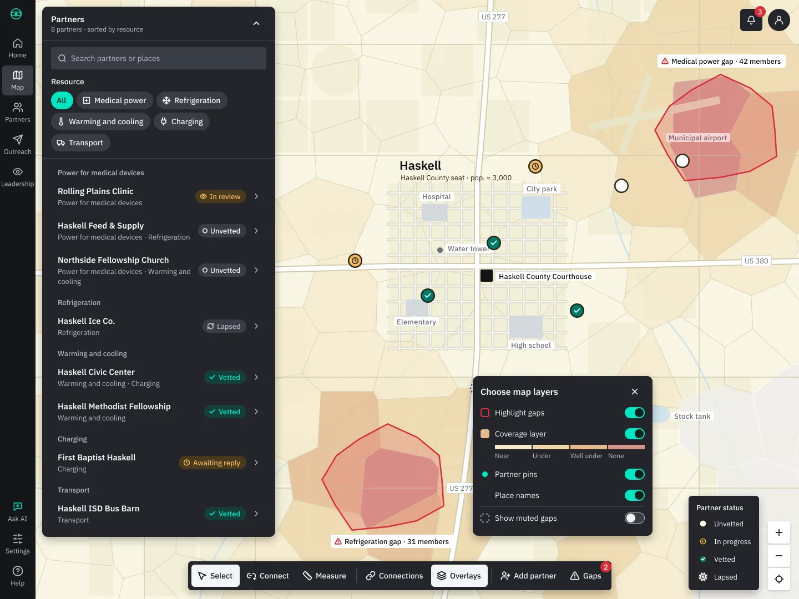
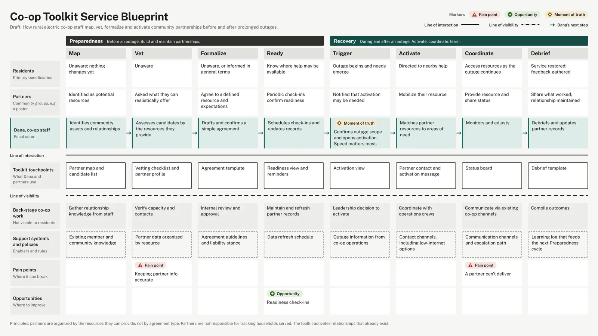
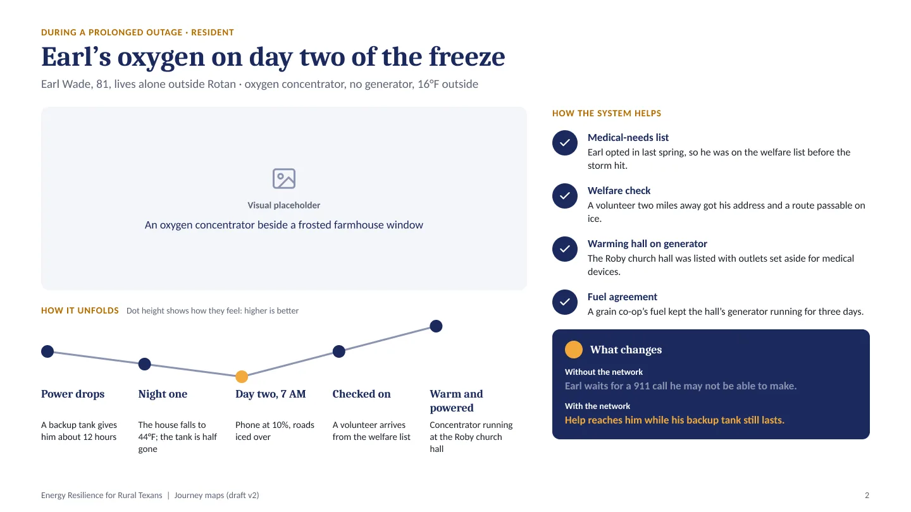
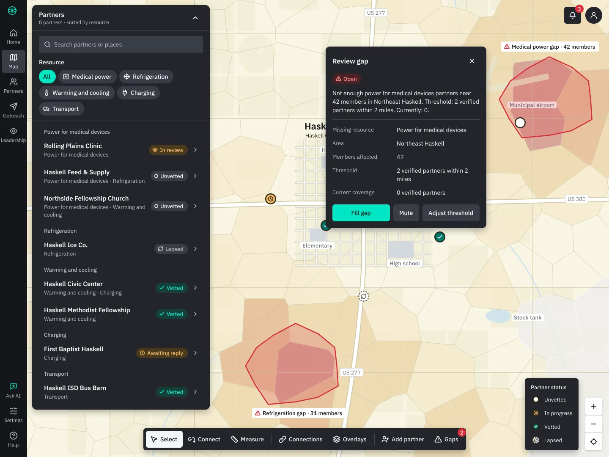
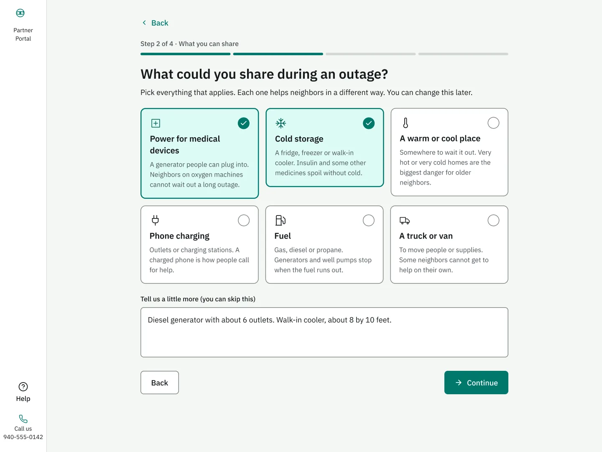
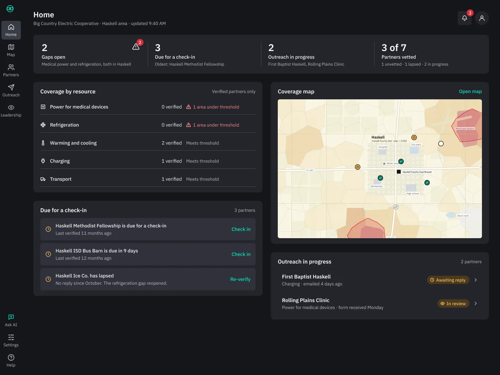

03 · The falls · Case study
Cooperative Connections
Energy Resilience for Rural Texans
Helping rural electric co-ops mobilize the help their communities already have.
- Role
- Team lead & project manager
- Timeline
- Fall 2026 capstone, UNT
- Team
- 2 (with Quincy)
- Tools
- Figma, FigJam
In short
When the power goes out in rural Texas, help is often far away, but neighbors, churches and local groups already step in. Cooperative Connections is a dashboard and partner portal that gives rural electric cooperatives a map of that community help. It shows where coverage has gaps and helps them fill those gaps with local partners, so outages hurt less without building anything new.
Needs Ian outcome line once testing / final review is done, e.g. "In testing, co-op staff found and filled a coverage gap in under X minutes."

The problem
Texas runs its own power grid, and when it fails, rural Texans feel it first and longest. The people at greatest risk are three overlapping groups:
- Energy-burdened households, already spending a large share of income on power
- Isolated households, far from services and from each other
- Medically vulnerable people, who rely on power for equipment, medication or temperature control
Formal aid such as emergency management and the Red Cross takes time to arrive. In the meantime, the response is local and informal: churches, volunteer fire departments, neighbors with generators. That help is real, but it isn't organized, so it's uneven and hard to count on.
Our questionHow might we reduce the harm of outages for rural Texans by strengthening the help their communities already provide?
Research
We started with the system, not the screen.
- Literature and desk research on outages, energy burden and assistance programs such as CEAP and LIHEAP
- A map of the Texas power market, from ERCOT and power generators through transmission utilities, retail providers, municipal utilities and electric co-ops, to understand who actually holds the relationship with rural households
- User and stakeholder interviews with rural residents and people involved in emergency response Needs Ian how many of each?
- A competitive review of disaster-response best practices
- Journey maps across an outage timeline: before, during and after the outage, through to bill assistance


Key insights
- Co-ops are the natural coordinator. Of all the players in the Texas market, electric cooperatives are the only ones that are both member-owned and local. They already know their members and their territory.
- The social capital already exists. It's just invisible. Churches, first responders and neighbors already help each other. What's missing is a shared picture of who can help, where, and with what.
- Information is the first need. People need information before, during and after an outage, including help applying for bill assistance once the power is back.
- Generosity grows when people feel they have enough. Residents who feel prepared are more likely to help a neighbor, and that effect can snowball.
Where it got hard
Key decisions, and why
- Design for the co-op, not only the household. Our early concept, "ReadyHome Network," centered on household readiness profiles. Mid-project feedback pushed us to look at how rural communities actually work together in emergencies. That moved the focus to the organization best placed to coordinate them. Check this confirm this was the pivot
- Strengthen what exists instead of building something new. A toolkit that maps and mobilizes existing community help is cheaper and faster to adopt than new infrastructure. It also gives co-ops a clear reason to use it: lower outage harm and stronger member trust.
- Keep it to two connected surfaces. A co-op dashboard for staff, and a partner portal for community groups, joined by one shared network.
The solution
Co-op dashboard. A map of the co-op's territory with overlays for member vulnerability and partner coverage. When an area falls below a coverage threshold, the dashboard flags it as a gap. Staff can open the gap, see suggested local partners, and reach out by phone or email in one step.

Partner portal. Churches, volunteer groups and local organizations get a simple form to join the network and say what they can offer. When they're added, the co-op's dashboard updates and the gap closes.

The full loop: a gap is spotted, the system suggests a partner, the co-op reaches out, the partner signs up through the portal, and the gap disappears from the map.

Supporting work: service map, user flows, a design system, and brand exploration for "Cooperative Connections."
Outcome
Needs Ian testing or final-review results. Useful forms: task success or time for the gap-filling flow, co-op or expert feedback, a quote from a rural resident or co-op staff member.
Reflection
Needs Ian Ian's own words. Prompts: What did leading a two-person team teach you about scoping? What would a real co-op pilot need to prove? What would you test next? Draft starter: Leading this project taught me that in systems work, the most valuable design move is often finding the right owner. Once we saw that co-ops were the one local, member-owned player in the system, the product almost designed itself.